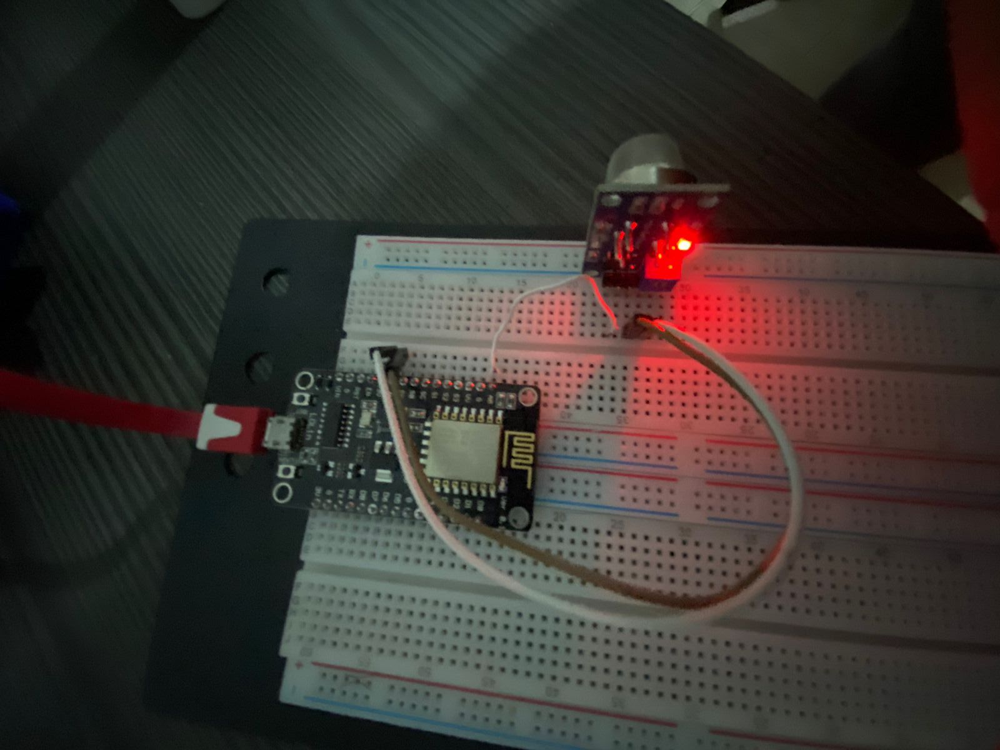

DESARROLLO DE PROTOTIPO FISICO
RutaVerde TEc

Sistema de bicicletas equipadas con sensores de CO2 para realizar mediciones de este gas alrededor de la zona del Tec.



Contacto
Juan Wenceslao Mijares, A01383573@itesm.mx, (844) 218 2424 Francisco Curiel Alvarado, A013842400@itesm.mx, (844) 186 1273